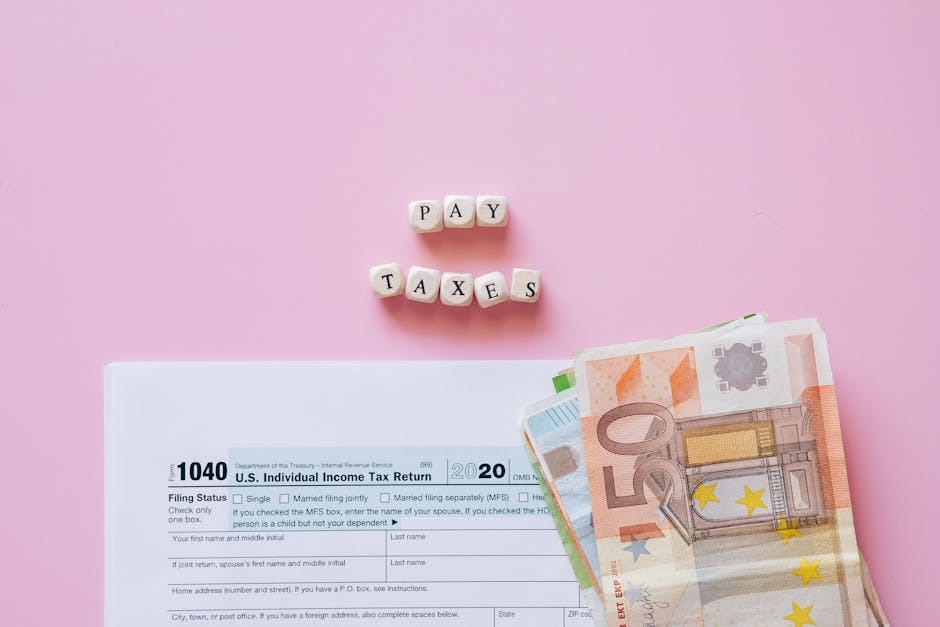

How to Invest Your Tax Refund in 2026
Got a $3,000 IRS refund? Invest it the right way in 2026 — emergency fund, debt, 401k match, Roth IRA. The order that turns $3k into $303k in 30 years.
Z Zar · 26 May 2026 — 7 min read

Disclosure: ZarWealth uses Amazon and other affiliate links throughout this article. We receive a small commission on qualifying purchases, at no additional cost to you. This helps keep ZarWealth free of paywalls and intrusive ads. Always do your own research before investing.
Want to go deeper on this? See How to Invest During High Inflation.
For the full breakdown, read How to Open a Brokerage Account in 10 Minutes.
Want to go deeper on this? See How to Invest in Real Estate With $1,000.
Want to go deeper on this? See Best Investing Apps for Beginners in 2026.
📈 Investing Part of our Complete Investing Guide — what to do with the average $3,000 tax refund before you spend it on something you'll regret.
The average tax refund is $3,000. Here is what to do with it
The IRS issued ~$300 billion in tax refunds in 2025, averaging about $3,050 per household. For most people, that's the single biggest "windfall" of the year — money that doesn't feel like a paycheck, doesn't show up in the budget, and is dangerously easy to spend on a vacation, a TV, or some "while I have it" purchase.
Treated right, that same $3,000 invested once per year for 30 years at a 7% return becomes $303,000 at retirement. Skipped one year? You leave $23,000 of future net worth on the table. This guide walks you through what to actually do with your refund in 2026 — in priority order — so you don't have to think about it next April either.
If you haven't filed yet, our finance automation guide covers how to set up the systems so this conversation happens automatically next year.
The priority order: where to put your refund first
Money has an order. Pay it in the wrong order and you waste opportunity; pay it in the right order and the same dollar buys more freedom. The priority below assumes you're a typical US worker with some debt and a 401(k) available — adjust if your situation differs.
Step 1 — top off your emergency fund. If you have less than $1,000 in a high-yield savings account, send the first $1,000 of your refund there. No exceptions. Emergency funds prevent every other financial decision from being made in panic mode.
Step 2 — pay off any debt above 8% interest. Credit cards, payday loans, personal loans with high APR. There is no investment in 2026 that reliably returns more than 8% net of tax — paying down 22% credit card debt is a guaranteed 22% return. Skip this only if you have a 0% intro APR period and a plan to pay off before it ends.
Step 3 — capture every dollar of 401(k) match. If your employer offers, say, a 4% match and you're only contributing 2%, increase your contribution from the rest of your refund. This is free money — typically 100% return on the dollars you contribute up to the match.
Step 4 — max your Roth IRA for the year. $7,000 limit in 2026 ($8,000 if 50+). Your refund covers most or all of this for many people. Tax-free growth for life is the best deal in the US tax code.
Step 5 — if there's still refund left, invest in a taxable brokerage. One simple total market index fund (VTI, ITOT, SCHB) is enough. Don't overcomplicate it.
📘 Free Download
Get the 6-page FI Checklist PDF
A roadmap to financial independence — sent to your inbox the moment you subscribe. Plus weekly investing playbooks.
Send me the PDF →No spam. Unsubscribe anytime.
The three-fund portfolio for your tax refund investment
If your refund money lands in a Roth IRA or taxable brokerage account in Step 4 or 5 above, the next question is what to actually buy. The simplest answer that wins for 95% of investors is a three-fund portfolio: one US total market ETF, one international total market ETF, one bond ETF.
For someone in their 30s, the allocation might be 70% VTI (Vanguard Total US Stock Market) + 20% VXUS (Vanguard Total International) + 10% BND (Vanguard Total Bond Market). Three tickers. Set them up as automatic monthly purchases. Rebalance once a year if you want; if you don't bother, the difference over 30 years is rounding error.
For someone in their 50s or older approaching retirement, shift the bond allocation to 30-40%. For someone in their 20s who can stomach volatility, push to 90% VTI / 10% VXUS with no bonds and let the bull markets do the heavy lifting.
The Simple Path to Wealth by JL Collins
How to actually invest your refund (without procrastinating)
The biggest enemy of your refund isn't the wrong investment — it's the calendar. Most people receive the refund, leave it sitting in their checking account "until I decide what to do," and by week 3 it's been absorbed into normal spending. The fix is mechanical: move the money the day it arrives, before your brain has a chance to negotiate.
On the day you see the IRS deposit, open your brokerage app and split the refund according to the priority order above in one sitting. If the Roth IRA contribution is the bulk of it, just transfer the full amount in one shot — you don't have to invest it immediately, but having it in the account commits you. The actual investing decision (buy VTI now or wait?) is much less consequential than the move-it-out-of-checking decision.
If you're disciplined enough to handle this manually, great. If not, set up a "tax refund automation rule" in your bank: when an inbound transfer over $1,500 hits checking from "IRS TREAS", auto-route 100% to your high-yield savings or brokerage. Many banks (Ally, Capital One 360, SoFi) support this kind of conditional rule.
Dollar-cost average or lump sum: the honest answer
There's a recurring debate about whether to invest a refund lump sum on day one or dollar-cost average it over 3-6 months. The Vanguard research on this is clear and counterintuitive: lump sum wins about 68% of the time. Markets trend up over time, so the longer your money sits in cash waiting to be averaged in, the more upside you forfeit.
The other 32% of the time (when markets crash within the next 6 months), DCA wins by avoiding the worst of the drawdown. So DCA is essentially insurance against bad timing — and like all insurance, it has a cost (the expected lower return of 0.5-1.5% over 6 months).
If you'd lose sleep over a 20% drop right after your lump sum, DCA over 3 months and call it cheap therapy. If you can stomach volatility, lump sum and don't look until next year. Either choice is fine; not investing is the only wrong answer.
Frequently Asked Questions
How much of my tax refund should I invest vs spend?
If you have any high-interest debt or your emergency fund is below 1 month of expenses, invest/save 100%. If both of those are handled, a common rule is to invest 80% and let yourself spend 20% guilt-free — the 20% acknowledges that a windfall feels like one, and prevents the psychological backlash of total deprivation that often ends in worse decisions.
Is it better to pay off debt or invest my refund?
Above 8% interest debt: pay off the debt — guaranteed return beats any reasonable investment. Below 4% (mortgage, federal student loans): invest, the long-term expected return on index funds beats the interest. Between 4-8% (auto loans, some private loans): it's a tie mathematically; pay off the debt if it stresses you, invest if you're emotionally fine with it.
Should I invest my tax refund in a Roth IRA or Traditional IRA?
Roth IRA almost always wins for someone using their tax refund. Two reasons: (1) you're putting in money you already paid taxes on, so Roth tax-free withdrawals are the natural fit, (2) tax brackets are likely higher in the future than today for most workers. Traditional IRA only makes sense if you're a high earner in your peak bracket years who expects to be in a lower bracket in retirement.
Can I still contribute to my 2025 Roth IRA after April?
No — the deadline is April 15, 2026 for 2025 contributions. If you missed it, the refund money has to go to your 2026 Roth IRA instead. The $7,000 limit applies per tax year separately.
What is the best ETF to buy with my tax refund in 2026?
For most investors: VTI (Vanguard Total Stock Market, 0.03% expense ratio). It owns ~4,000 US stocks in one fund and has outperformed almost every active fund manager over 10+ year periods. Alternatives: ITOT (iShares, same idea, 0.03%) or VOO (S&P 500 only, 0.03%). Any of these wins long-term.
Should I pay down my mortgage with my tax refund?
Only if your mortgage rate is above 6% and you're already maxing tax-advantaged accounts. For most homeowners with rates of 3-5% locked in years ago, investing the refund at 7-10% expected return beats prepaying the 3-5% mortgage by a wide margin. The math changes if your rate is 7%+ (recent mortgages).
What if I already spent my tax refund?
Don't beat yourself up — most people do. But this is a sign your withholding is set too high and you're giving the IRS an interest-free loan. Adjust your W-4 to reduce withholding by the refund amount divided by 12, and redirect that monthly extra directly into automatic investments. You convert a once-a-year windfall into 12 monthly contributions that you never see in checking.
📊 Want the full picture?
For the broader investing roadmap from $0 to $1M, see our Complete Investing Guide — covers asset allocation, account types, and tax strategy for every life stage.
📋 The FI Checklist
Track your path to financial independence with our free FI Checklist — a one-page printable covering every step from emergency fund to 25x annual expenses.
Disclosure: ZarWealth uses Amazon and other affiliate links throughout this article. We receive a small commission on qualifying purchases, at no additional cost to you. This helps keep ZarWealth free of paywalls and intrusive ads. Always do your own research before investing.